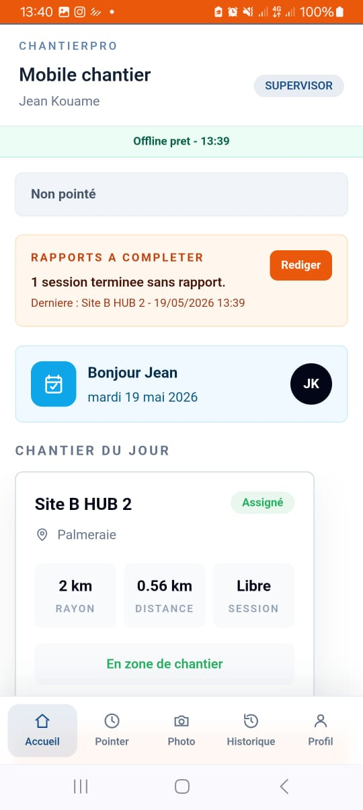
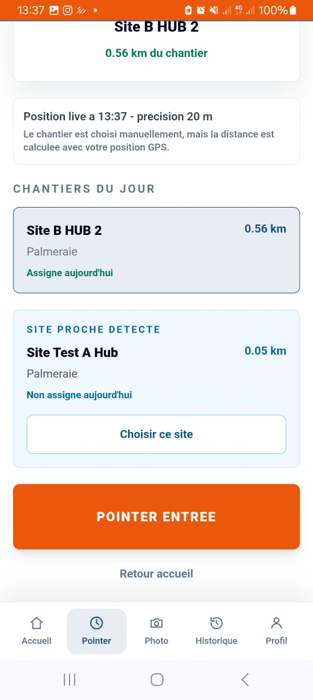
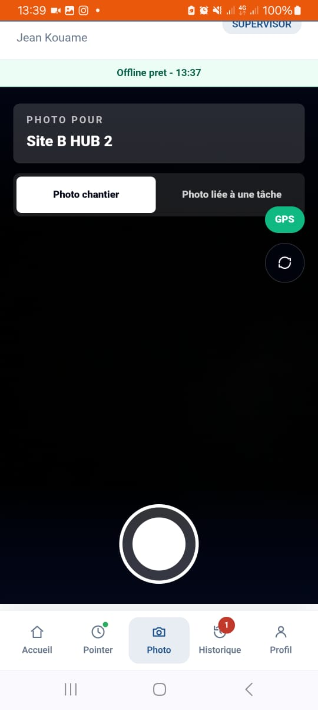
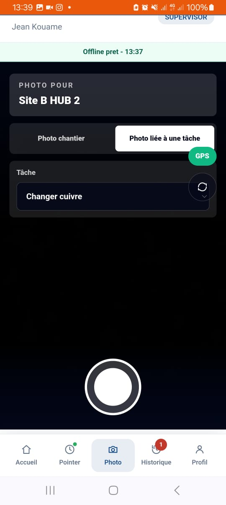
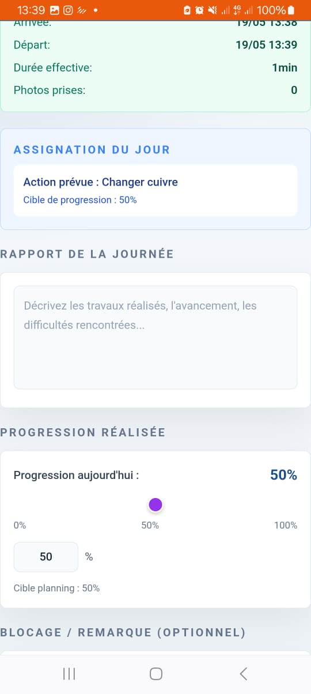
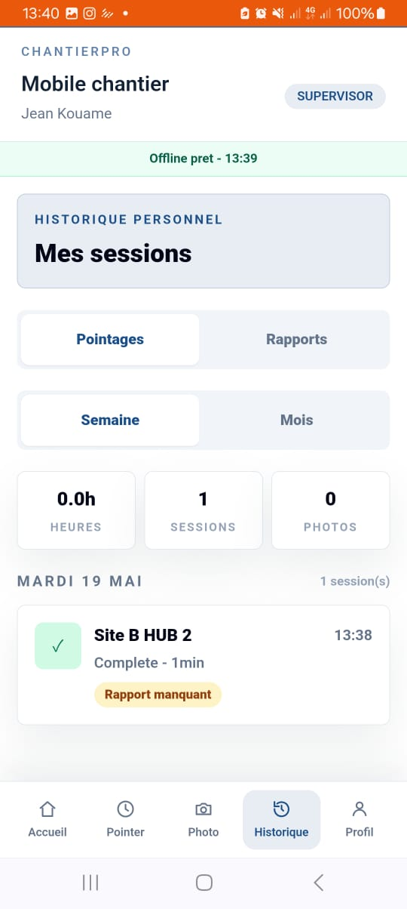
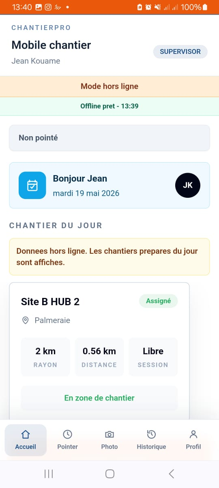
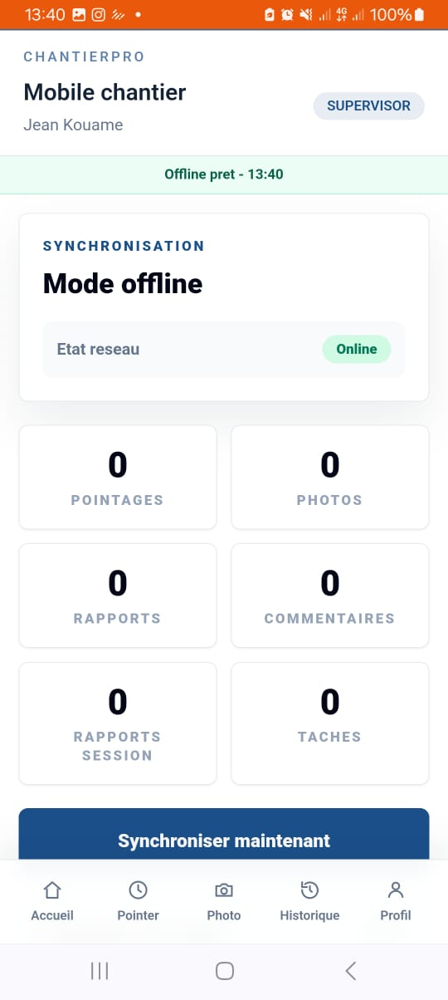

Objectif du role
Le superviseur terrain execute sa journee dans l'application mobile : voir ses chantiers assignes, pointer, prendre des photos, suivre ses taches, rediger les rapports et synchroniser les actions si le reseau revient.
Le superviseur terrain execute sa journee dans l'application mobile : voir ses chantiers assignes, pointer, prendre des photos, suivre ses taches, rediger les rapports et synchroniser les actions si le reseau revient.
Mobile : Accueil, Chantiers du jour, Pointer, Photo, Historique, Rapport session, Sync/offline et Profil.
Web : pas d'espace de pilotage principal. L'usage normal du superviseur est mobile.

assets/sup-mobile-accueil.jpeg
assets/sup-mobile-chantiers-du-jour.jpeg
assets/sup-mobile-pointage.jpeg
assets/sup-mobile-pointage-distance.jpeg
assets/sup-mobile-sortie-distante.jpeg
assets/sup-mobile-photo.jpeg
assets/sup-mobile-photo-tache.jpeg
assets/sup-mobile-rapport-session.jpeg
assets/sup-mobile-rapport-tardif.jpeg
assets/sup-mobile-historique.jpeg
assets/sup-mobile-offline-shell.jpeg
assets/sup-mobile-sync-offline.jpeg